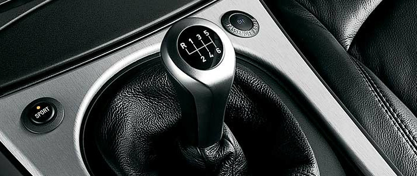
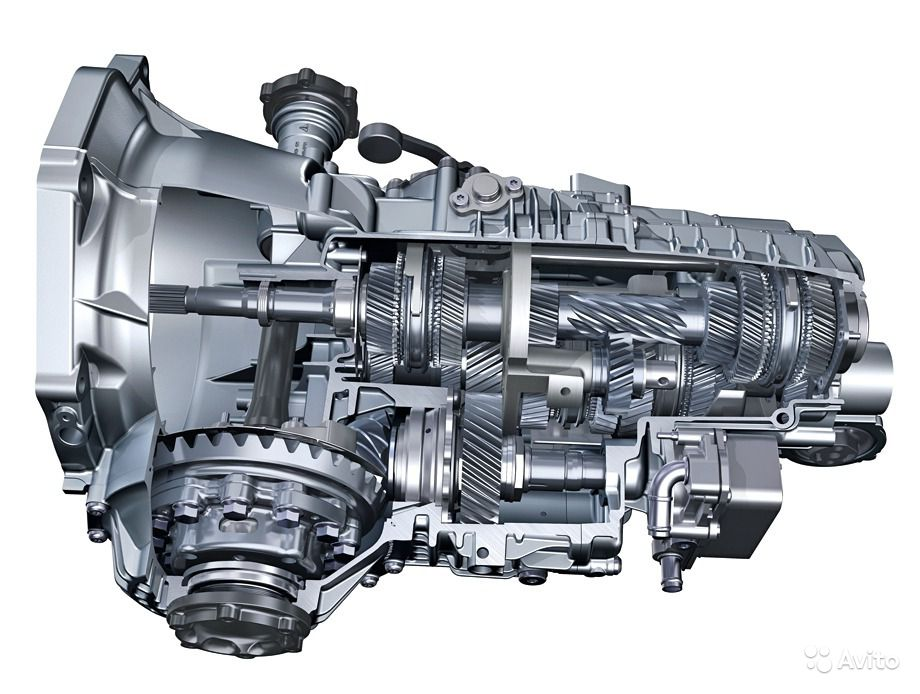

Ремонт коробки передач
РЕМОНТ МКПП:
Полный или частичный выход из строя коробки передач делает автомобиль непригодным к дальнейшей эксплуатации. Ремонт коробки передач - процедура не из легких, особенно, когда идет речь об автомобилях со значительным пробегом. Несмотря на огромное количество СТО в Минске, ремонт МКПП - механической коробки переключения передач, предлагают далеко не все. Часть СТО обслуживают определенные марки автомобилей, а еще чаще клиентам сразу предлагается замена МКПП без попыток ее отремонтировать.
СТО"ВиколаСервисплюс”" производит ремонт МКПП в Минске, который будет выполнен силами высококвалифицированных специалистов.
Специалисты нашей компании с точностью определят неисправность КПП и причину ее возникновения.
При затрудненном переключении передач не всегда виновата МКПП. Если для переключения передач требуется прикладывать усилие, а в момент переключения происходит удар и, возможно, скрежет, - скорее всего, необходима замена сцепления. Диагностика автомобиля, проведенная нашими специалистами, позволит выявить неисправности: чаще всего выходит из строя ведомый диск. Если во время нажатия на сцепление происходит шум, то, скорее всего, дело в выжимном подшипнике. Хотя и ведомый диск тоже не стоит сбрасывать со счетов, возможно его биение.
Мы сотрудничаем с многими компаниями, что позволяет приобретать запчасти для Вашей МКПП в самые короткие сроки.
Если Вас интересует стоимость ремонта МКПП Вашего автомобиля, Вы всегда можете связаться с нами.
РЕМОНТ АКПП:
Профессиональная диагностика, регулировка и ремонт АКПП на сертифицированном оборудовании.
Ремонт АКПП - основной вид деятельности нашего сервисного центра. Мы специализируемся именно на ремонте автоматических коробок передач. Наши специалисты имеют большой опыт работы и могут выполнить ремонт практически любой АКПП - будь то Тойота, Ниссан, Хонда, Мицубиси, Субару или другой производитель.
Ресурс АКПП по сравнению с ресурсом МКПП несколько меньше. Для автомобилей среднего класса он составляет порядка 300 000 км, для автомобилей малого класса - около 150 000 км. Так что, если заветные цифры Вашего "НЕскрученного" спидометра подбираются к этим значениям - уже можете нам звонить и спрашивать стоимость диагностики АКПП для Вашего автомобиля.
Основными причинами ускоренного износа АКПП являются: низкий уровень масла в АКПП и несвоевременная его замена; манера езды, связанная с интенсивными разгонами, злоупотребление приемом "педаль в пол". Все это существенно сокращает ресурс такого механизма автомобиля, как автоматическая коробка передач.
Если Вы наблюдаете толчки, вибрацию, посторонний шум, падение скорости при переключении передачи - срочно обращайтесь к специалистам! И тогда есть вероятность, что Вам не придется покупать всех дорогостоящих деталей, а ограничиться только теми частями АКПП, которые только начали "барахлить". А то и вовсе - дело обойдется регулировкой.
И знайте - квалифицированный ремонт или замену автоматических коробок передач осуществляют только специализированные предприятия.
Мастер по ремонту двигателя - может раскрутить гайки и на АКПП. И закрутить тоже. Только механизм сложный.
Сроки и цена ремонта АКПП могут сильно различаться в зависимости модели, состояния в котором Вы её нам предоставили, наличия необходимых запчастей на складе, а так же загруженности сервисного центра. Мы ценим Ваше время, поэтому рекомендуем записаться на диагностику заранее. Так же, просим ценить и наше время, и перед тем как обращаться, подготовте пожалуйста следующую информацию: марка автомобиля, год выпуска и модель двигателя, пробег, признаки неисправности АКПП, когда последний раз проводилось обслуживание АКПП (километраж).
Наш адрес: г. Минск, ул.Ваупшасова, 2 (Моторный завод)
Велком: (044) 579-83-38
МТС: (029) 279-83-38
E-mail: vicolaserviceplus@mail.ru